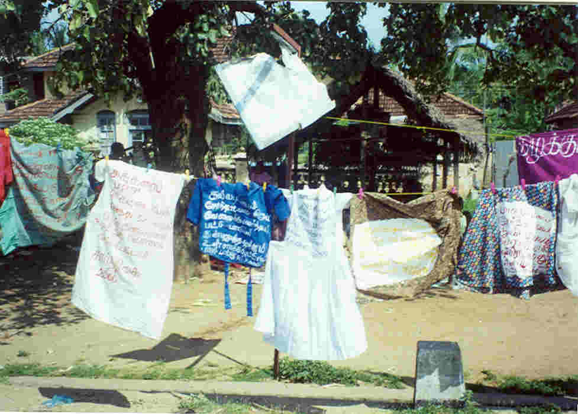

November 2003
Volume 2; Issue 3
Editorial Comments
Interventions
- The Impossible Refugee of Western DesireSuvendrini Perera
- Violence Against Women and the Death Penalty: Appropriating the Feminist AgendaNimanthi Perera-Rajasingham
- Persistent Deprivation of Jaffna Peninsula’s Fishing Communities: Need for Sensitive and Creative SolutionsN. Shanmugaratnam
- Opening Citizenship: Civil Society and Queer Networks in Sri LankaSharmini Fernando
- ‘The War on Terror’: From Birmingham to BatticaloaS. M. M. Bazeer
- Economics as if Women were AgentsFabienne Peter
- The Status of Economic and Social Rights and Minority GrievancesAhalya Dakshana
- The ‘Clothesline’ Project: Sri LankaThe Women’s Support Group